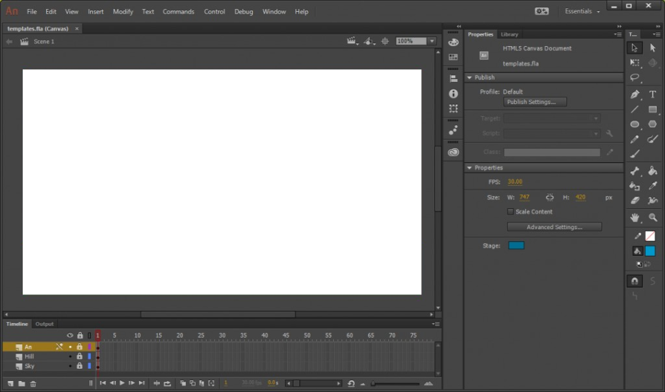

Menu
Adobe app
MENU
Close Menu
Photoshop
Lightroom
Lightroom Classic
Fresco
Illustrator
Dimension
XD
Dreamweaver
InDesign
Premiere Pro
Premiere Rush
After Effects
Animate
Audition
Character Animator
Prelude
Media Encoder
Adobe app 설명서
Animate
사용
애니메이션 및 일러스트레이션 도구
백터 디자인
기능
백터 이미지(다양한 효과,캐릭터 등) 그리기
애니메이션 만들기
애니메이션 코드 구현
어도비 앱(Pr 등)들과 상호작용 등
튜토리얼
*사용화면

애니메이트를 이용한 예시
관련 유튜버(강좌)
시간강사 율시민
중랑아재
관련 직업 및 사용처 예시
애니메이션 만화
웹,모바일 등게임
다양한 일러스트 영상
시스템 최소 요구사양(권장사양)
윈도우
시스템
최소요구사항
프로세서(CPU)
Intel Pentium 4, Intel Centrino, Intel Xeon 또는 Intel Core Duo(또는 호환) 프로세서(2GHz 이상)
운영 체제
Windows 10 버전 1803, 1809 이상
램
2GB RAM(8GB 권장)
하드 디스크 공간
설치를 위한 4GB의 하드 디스크 여유 공간, 설치 중 추가 공간 필요(이동식 플래시 저장 장치에 설치할 수 없음)
모니터 해상도
1024x900 디스플레이(1280x1024 권장)
GPU(그래픽)
OpenGL 버전 3.3 이상 (기능 수준이 12_0인 DirectX 12 권장)
인터넷
소프트웨어 활성화, 구독 확인, 온라인 서비스 액세스를 위해서는 인터넷 연결 및 등록이 필요합니다
맥os
시스템
최소요구사항
프로세서(CPU)
멀티코어 Intel 프로세서
운영 체제
macOS X 버전 10.13(64비트), 버전 10.14(64비트) 또는 버전 10.15(64 비트)
램
2GB RAM(8GB 권장)
소프트웨어
QuickTime 10.x 소프트웨어 권장
하드 디스크 공간
설치를 위한 4GB의 사용 가능한 하드 디스크 공간, 설치 중 추가 여유 공간 필요(대/소문자 구분 파일 시스템을 사용하는 볼륨이나 이동식 플래시 저장 디바이스에는 설치할 수 없음)
모니터 해상도
1024x900 디스플레이(1280x1024 권장)
GPU(그래픽)
OpenGL 버전 3.3 이상 (Metal 지원 권장)
인터넷
소프트웨어 활성화, 구독 확인, 온라인 서비스 액세스를 위해서는 인터넷 연결 및 등록이 필요합니다
* 더 자세한 정보
한국어
/
영어
출처-
www.adobe.com